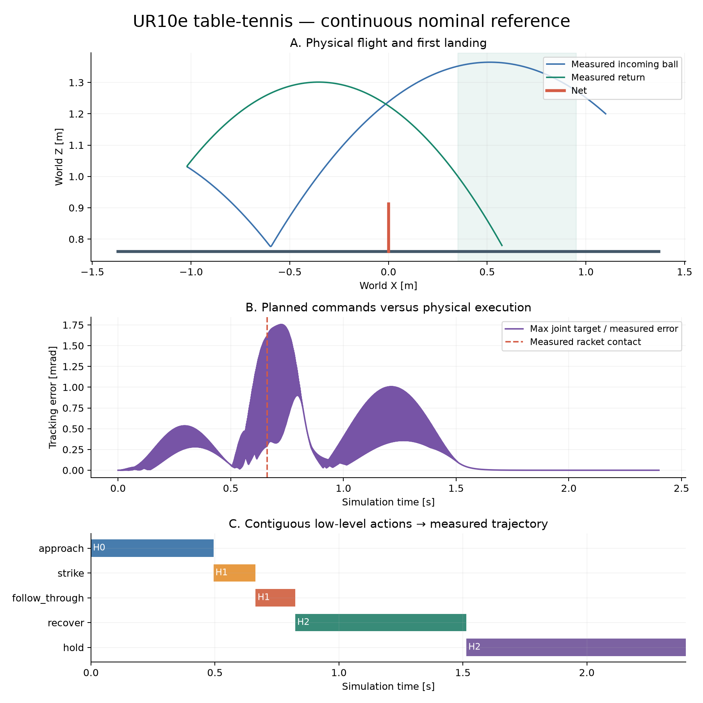

Table tennis: a hierarchical UR10e reference
Fixed arm · Single return · Physical contact · Stage scoring
Release scope: one no-spin return in four public exact configurations, using current simulator state. Vision, continuous rallies, humanoid doubles and formal benchmark admission are not included.
Continuous physical witness
Gamma RTX A4000: CUDA evaluates 28,033 outgoing candidates and EGL renders video. MuJoCo joint/contact dynamics run on CPU. No GPU physics or real-time control claim.
Full videos and raw trajectories are distributed in the release archive. View them in the local evidence checkout or extracted bundle.
Three representations and evidence
| ID | Goal | Actions | Independent check |
|---|---|---|---|
| H0 | 准备接球 / Prepare | approach | 实测关节位置、速度与碰撞 / measured joints and constraints |
| H1 | 回击目标 / Return | strike → follow_through | 球拍接触、过网、首次落点 / contact, net, first landing |
| H2 | 回位保持 / Recover | recover → hold | 终态姿态和连续保持 / terminal pose and dwell |

Planned commands and measured states are stored separately. Every action binds a contiguous command interval and measured entry/exit state.
Scoring and retained failures
stage-scoring/1: 25 + 25 + 20 + 15 + 15 = 100
Legal racket impact → net clearance → opponent landing → target landing → recovery hold. The first four milestones are credited once; the last is live at the endpoint. Integrity failures clear all awarded credit.
Reproduction and deliverables
python -m single_arm.ur10e_table_tennis.run --device cuda --case nominal --output /tmp/tt-run python -m single_arm.ur10e_table_tennis.verify /tmp/tt-run python -m single_arm.ur10e_table_tennis.run --device cuda --replay /tmp/tt-run --output /tmp/tt-replay
Task manifest · Expert contract · Scoring rubric · Data card · Licenses / sources
Campaign result · All attempts · Torque replays · Contact checks · Development failures
Extension design: stepping, arm relocation and continuous rallies
Published task/metric design; physical validation of the new tasks is pending.